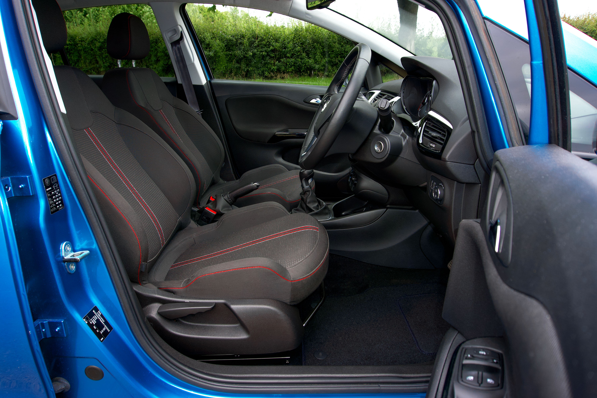

Image de fond : assets/header-journal-odeurs.jpg
Réponse directe : une odeur de voiture provient presque toujours d'une source physique précise — tissu imbibé, moquette humide, filtre d'habitacle encrassé — jamais de « l'air » lui-même. Un désodorisant masque cette source pendant quelques jours ; seul un nettoyage qui atteint la source règle le problème durablement.
D'où vient vraiment l'odeur ?
Avant de traiter, il faut localiser. Trois zones concentrent la quasi-totalité des odeurs persistantes :
- Sous les sièges — miettes et restes de nourriture oubliés, invisibles sans démonter le siège.
- Les tapis et moquettes — humidité, boue, liquide renversé qui a séché en surface mais reste humide en profondeur.
- Le système de ventilation — moisissures qui se développent dans les conduits de climatisation, souvent la cause d'une odeur qui revient dès que la ventilation démarre.
Si l'odeur est plus forte à la mise en route de la ventilation, la source est presque toujours le circuit d'air, pas l'habitacle lui-même.
Comment enlever une odeur de tabac dans une voiture ?
La fumée s'imprègne dans tout ce qui est poreux — tissu, mousse des sièges, ciel de toit, moquette — pas seulement dans l'air ambiant. Un simple désodorisant ne fait que superposer un parfum par-dessus. Le bicarbonate de soude saupoudré sur les surfaces textiles, laissé plusieurs heures puis aspiré, absorbe une partie réelle de l'odeur en profondeur. Pour une imprégnation ancienne de plusieurs années, seul un traitement professionnel à l'ozone élimine complètement l'odeur — les méthodes maison la réduisent sans la faire disparaître totalement.
Comment enlever une odeur de moisi ou d'humidité ?
Fréquente en Alsace avec le climat humide. L'odeur de moisi signale presque toujours un problème d'humidité qui persiste quelque part — un tapis qui n'a jamais séché après une pluie, une infiltration au niveau d'un joint de porte. Aérer ne suffit pas : il faut identifier et sécher la zone humide elle-même, sinon l'odeur revient en quelques jours.
Le bicarbonate de soude, ça marche vraiment ?
Oui, mais seulement sur les odeurs qui n'ont pas complètement imprégné les matériaux. Il absorbe efficacement les odeurs de surface (nourriture, transpiration légère) et désinfecte modérément. Le vinaigre blanc est plus efficace sur les odeurs organiques acides — café, urine — et son propre parfum disparaît en séchant. Le charbon actif, placé en sachet sous un siège, absorbe en continu sur 2 à 3 mois : utile en entretien, pas en traitement de choc.
Quand faut-il un professionnel plutôt qu'une astuce maison ?
Trois signaux indiquent qu'un remède maison ne suffira pas : l'odeur revient après quelques jours malgré un nettoyage, elle provient clairement de la ventilation plutôt que des textiles, ou elle date de plusieurs années (tabac ancien, dégât des eaux passé). Dans ces cas, un nettoyage professionnel avec injection-extraction traite la source en profondeur, là où un aspirateur domestique ne fait que déplacer la poussière de surface.
Un désodorisant qui sent l'odeur revenir sous trois jours n'a rien traité — il a juste retardé le moment où vous vous en rendez compte.
On s'occupe de votre voiture ?
Lavage à domicile en Alsace, sur rendez-vous 7j/7.